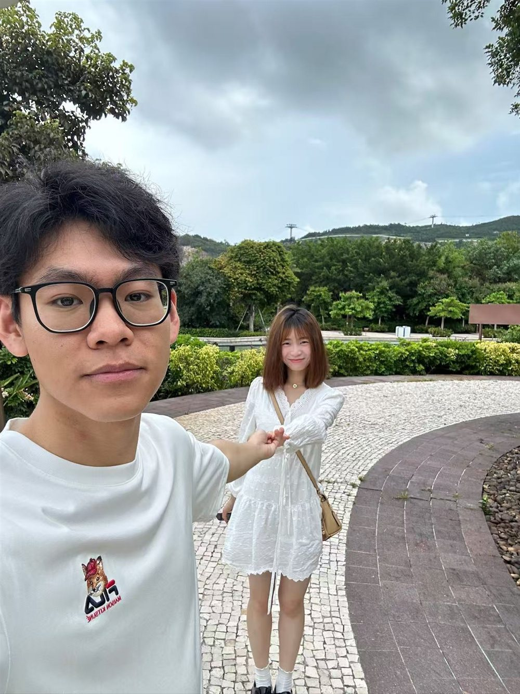

WRITING撰写中
A book on zero-knowledge proofs零知识证明专著
A systematic treatment of ZKP — from foundations to constructions and applications.系统介绍零知识证明，从基础理论到构造与应用。
Research Fellow · NUS Computing新加坡国立大学 · 博士后研究员
路直
I build cryptographic tools that let people compute together without giving up their privacy — and that hold misbehaving parties accountable when trust breaks down. 我研究如何让多方在不泄露隐私的前提下协同计算，并在信任失效时，依然能让作恶者被追责。

I'm a Research Fellow in the School of Computing at the National University of Singapore, working with Prof. Jiaheng Zhang. My work spans zero-knowledge proofs, secure aggregation, distributed key generation, anonymous credentials and anonymous accountability — the building blocks of trustworthy AI and data systems.
我是新加坡国立大学计算机学院的博士后研究员，合作导师为张嘉恒教授。研究方向包括零知识证明、安全聚合、分布式密钥生成、匿名凭证与匿名可追责机制 —— 这些都是可信人工智能与可信数据系统的基础。
Before NUS, I earned my Ph.D. and M.S. in Cyberspace Security at Huazhong University of Science and Technology under Prof. Songfeng Lu and Prof. Jianxin Zhu, and my B.S. in Computer Science at SUSTech under Prof. Xin Yao.
此前，我在华中科技大学获得网络空间安全博士和硕士学位，师从路松峰教授与朱建新教授；本科毕业于南方科技大学计算机科学与技术专业，师从姚新教授。
Led projects with Huawei and Qi-Anxin, turning research questions from industry into working systems.主持与华为、奇安信合作的项目，把产业界的真实问题做成可用的系统。
I mentor Ph.D. and master's students in their research; many of our papers are co-first-authored, and I've led student teams on industry problems from DiDi and Topsec.指导多名博士、硕士研究生开展研究，多篇论文与所指导的同学共同第一作者；带领学生团队完成滴滴、天融信出题的产业课题。
Program Committee for USENIX Security 2027; reviewer for IEEE TIFS, TDSC, JSAC and WWW.担任 USENIX Security 2027 程序委员，并为 IEEE TIFS、TDSC、JSAC、WWW 等审稿。
A systematic treatment of ZKP — from foundations to constructions and applications.系统介绍零知识证明，从基础理论到构造与应用。
A new paper bringing anamorphic cryptography to zero-knowledge proofs.将 anamorphic 密码学引入零知识证明的新工作。
Supported by the China Association for Science and Technology and the China Computer Federation.由中国科学技术协会与中国计算机学会支持。
University-funded research on security, privacy and trustworthy systems.校级研究生创新基金，支持安全、隐私与可信系统方向研究。
Cybersecurity Student Innovation Funding Program, Phase III — matching data without exposing it.网络安全学院学生创新资助计划第三期，在不暴露数据的前提下完成匹配。
Phase I of the program led by the Cyberspace Administration of China with the Cybersecurity Association of China.中央网信办牵头、中国网络空间安全协会组织的创新资助计划第一期。
2 national standards published, 3 under review, plus 3 group standards — on digital twins, smart factories and trusted CNC systems.已发布国家标准 2 项、审查中 3 项，团体标准 3 项，涉及数字孪生、智能工厂与数控系统可信防护。
On industrial-control security, cryptographic infrastructure for CNC systems, aggregation verification and biomedical privacy.涵盖工业控制安全、数控系统密码基础设施、聚合验证与生物医学隐私。